2 Copepoda
Réaliser une étude sur l’abondance en plancton sans analyser les copépodes n’aurait aucun sens. En effet, ces organismes sont les êtres pluricellulaires les plus abondants et représentent jusqu’à 80% de la biomasse zooplanctonique (Gasparini 2008). C’est pour cela que l’explication les concernant est séparée des autres crustacés dont ils font partie.
L’anatomie des copépodes a été largement décrite, ce qui permet une bonne identification sur base de celle-ci. La Figure 2.1 propose une la morphologie d’un copépode sur base d’une femelle gymnoplean. Classiquement, un copépode est divisé en un céphalosome (tête), un métasome (thorax) et d’un urosome (abdomen). A l’extrémité du céphalosome se trouvent les antennules (généralement longues) et les antennes (plus courtes) qui jouent des rôles sensoriels, locomoteurs et/ou préhenseurs. Viennent ensuite les mandibules, maxillules, maxilles et maxillipèdes servant à la prise de nourritures. Le métasome est divisé en plusieurs segments, portant chacun une paire de pattes dont la dernière est généralement un organe copulatoire. Ces organismes portent des soies ayant un rôle sensoriel mais également dans la locomotion sur les antennules (Conway 2012; Ruppert, Fox, et Barnes 2004).
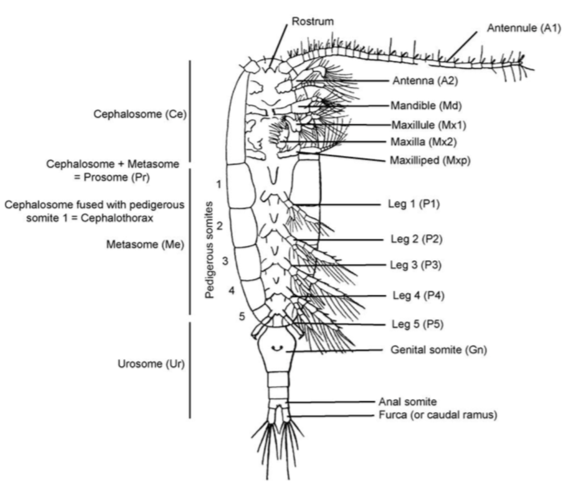
Dans les études précédentes dont Quivy, Thomas (2018), seuls 3 ordres (basés sur l’ancienne taxonomie) de copépodes ont été analysés et repris dans le set d’apprentissage car ceux-ci étaient les plus abondants dans les sites d’échantillonnages. Dans le cadre de ce guide et de l’étude de Dugauquier (2019) , c’est la classification la plus actuelle des copépodes qui est employée (Khodami et al. 2017). Cette phylogénie a été établie a partir de 210 espèces de copépodes et basée sur une analyse de l’ARNr 18S et 28S par maximum Likelihood.
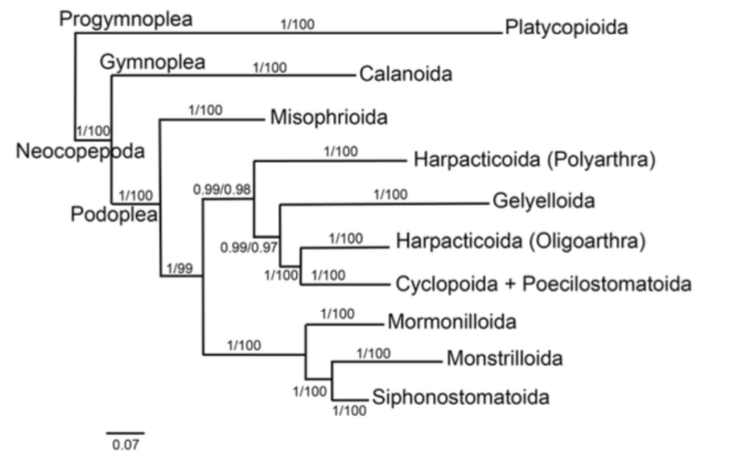
Les copépodes sont une sous-classe de crustacé, composées de 8 ordres différents répartis dans 2 infra-classes, les neocopepoda et les progymnoplea ( Figure 2.2 ). La différence majeure entre la phylogénie actuelle et celle utilisée pour les guides précédents réside dans la position des Cyclopoida et Poecilostomatoida qui sont maintenant rassemblés. La distinction Podoplea/Gymnoplea est établie depuis bien longtemps et se base principalement sur des différences morphologiques, corrélées par des mesures génomiques (Horton et al. 2022).
Les copépodes sont des organismes extrêmement variés en terme de morphologie. Distinguer la taxonomie de ces animaux par phénétique est donc difficile et demande beaucoup d’entrainement mais avec différentes études (Conway 2012 ; Dahms, Fornshell, et Fornshell 2006 ; Brancelj 2009 ; Wooton et Castellani 2017) préalables il est possible de ressortir les caractéristiques principales des ordre de copépodes ( Table 2.1 )
| Ordre | Antennules | Cephalosome | Urosome | Divers |
|---|---|---|---|---|
| Calanoida + Platycopioida | Plus grandes que le céphalosome | 5e paire de patte biramée | Plus petit que le prosome et dépourvu d’appendice | |
| Misophrioida | Courtes et parfois coudées à la moitié | Arrondis | Relativement court et épaissit au 2e segment | |
| Harpacticoida | Courtes et épaisses | Allongé et fusiforme | Biramé | Corps à l’apparence vermiforme |
| Gelyelloida | Courtes, épaisses et rapprochées à la base | Allongé et fusiforme, plus épais à la tête | Court et biramé | |
| Mormonilloida | Très longues et ramifiées | Allongé | Biramé, long et très ramifié | |
| Monstrilloida | Portant plusieurs soies | Très long et uniforme | Portant plusieurs ramifications | |
| Siphonostomatoida | Courtes et perpendiculaires au prosome | Court et en forme d’obus | Un peu plus court que le prosome | L’apparence générale de l’organisme rappelle un triops |
| Cyclopoida | Plus large que l’urosome et la 5e paire de patte uniramée | Antennes courtes et parfois biramées |
2.1 Gymnoplea : Platycopioida + Calanoida
Progymnoplea est une infra-classe de Maxillipoda composée d’un seul ordre, celui des Platycopioida (Suárez-Morales 2015).
Cet ordre comprend une seule famille dont toutes les espèces décrites jusqu’à présent ont été trouvées entre 0 et 120 m de profondeur dans différentes parties du monde (mer du Nord, Amérique du Nord, Bahamas, Bermudes, Japon,…) (Arbizu 1997). Ces organismes sont souvent placés proche des Calanoida de part leur grande promiscuité morphologique. La séparation prosome et urosome, critère souvent utilisé en taxonomie des copépodes est en effet la même [(Mauchline 1998). Il est de ce fait extrêmement difficile, sans analyse génomique, de différencier ces 2 ordres, longtemps classés sous un seul et même terme, les Gymnoplea (utilisé actuellement uniquement pour les Calanoida). Par soucis de clarté et de précision, les Platycopioida et les Calanoida seront donc considérés ensemble, comme faisant partie du même groupe, celui des Gymnoplea (Wooton et Castellani 2017). L’ordre des Calanoida est le plus riche des deux en terme de nombre d’espèce (Quivy, Thomas 2018). Ils se distinguent par un type de nage lente et circulaire en temps normal ainsi que par un corps long et effilé. Les individus de cet ordre sont majoritairement planctoniques (Perbiche-Neves et al. 2015)
Différencier 45 familles uniquement sur base de vignettes n’est pas possible sans un œil expert. Néanmoins, plusieurs études se sont occupées de classer ces familles dans différentes super-familles. Il est possible en compilant toutes ces études de simplifier grandement cette taxonomie (Blanco-Bercial, Bradford-Grieve, et Bucklin 2011; Bradford-Grieve et al. 2010; Khodami et al. 2017).
Ce sont ces super-familles qui sont utilisées pour la création de ce set d’apprentissage.
Augaptiloidea ou Arietelloidea : Arietellidae, Augaptilidae, Discoidae, Heterorhabdidae, Hyperbionycidae, Lucicutiidae, Metridinidae et Nulosetigeridae
Centropagoidea ou Diaptomoidea : Acartiidae, Candaciidae, Centropagidae, Diaptomidae, Parapontellidae, Pontellidae, Pseudodiaptomidae, Sulcanidae, Temoridae et Tortanidae
Bathypontioidea : Bathypontiidae et Fosshageniidae
Clausocalanoidea : Aetideidae, Clausocalanidae, Diaxidae, Euchaetidae, Mesaiokeratidae, Parkiidae, Phaennidae, Pseudocyclopiidae, Rostrocalanidae, Scolecitrichidae, Stephidae et Tharibidae
Ryocalanoidea : Ryocalanidae
Eucalanoidea : Eucalanidae, Rhincalanidae et Subeucalanidae
Megacalanoidea ou Calanoidea : alanidae, Megacalanidae et Paracalanidae
Pseudocyclopoidea : Pseudocyclopidae
Epacteriscoidea : Epacteriscidae
Spinocalanoidea : Arctokonstantinidae et Spinocalanidae
Dans cette étude les super-familles suivantes ont été déterminées :
- Augaptiloidea/Arietelloidea ( Figure 2.3 )
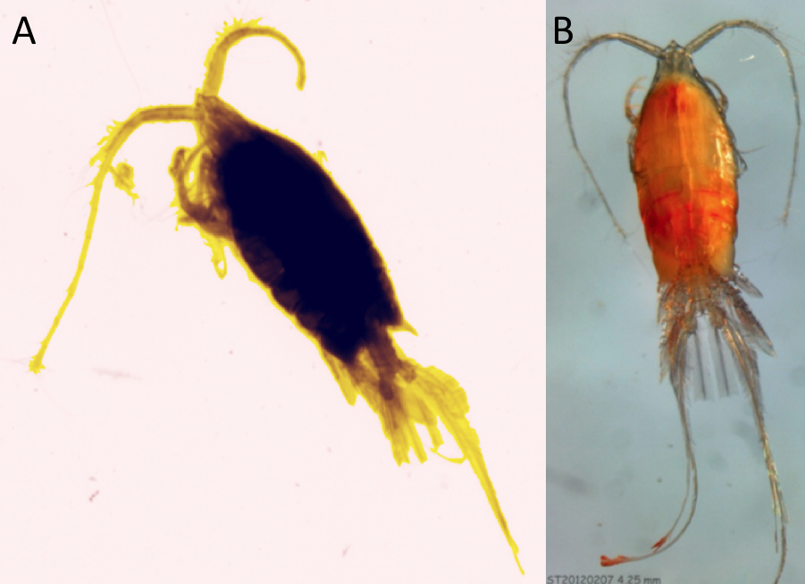
- Centropagoidea/Diaptomoidea (Figure 2.4)
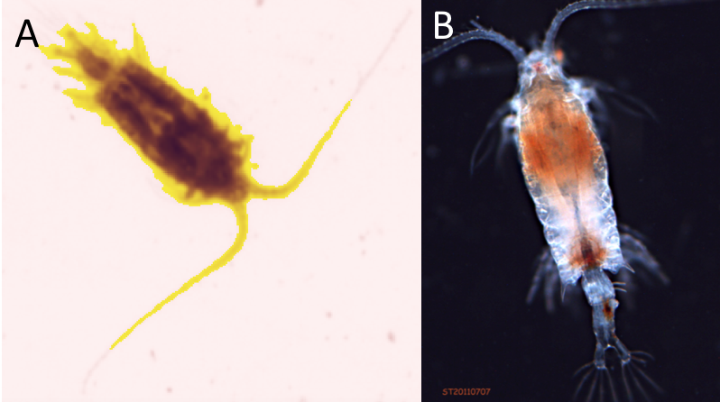
La Figure 2.5 propose des vignettes supplémentaires.
plot_vignettes(vigns, group = "centropagoidea_diaptomoidea")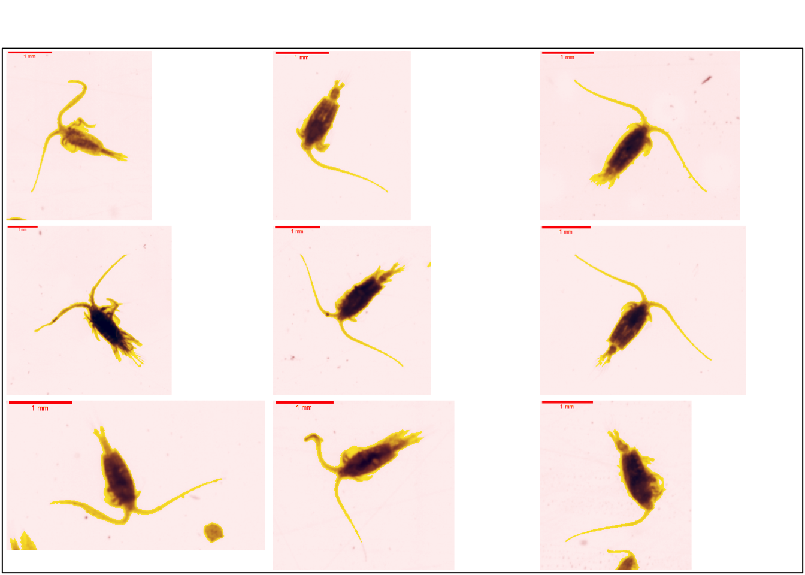
- Eucalanoidea (Figure 2.6)
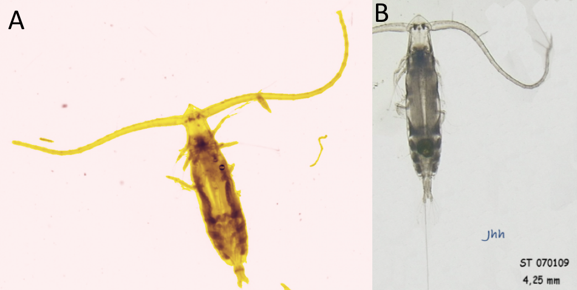
La Figure 2.7 propose des vignettes supplémentaires.
plot_vignettes(vigns, group = "eucalanoidea")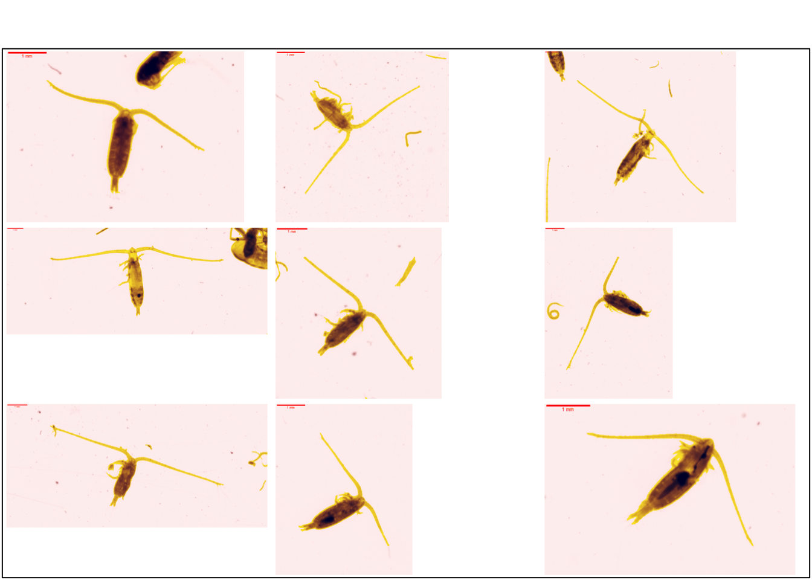
- Calanoidea/Megacalanoidea (Figure 2.8)

La Figure 2.9 propose des vignettes supplémentaires.
plot_vignettes(vigns, group = "calanoidea_megacalanoidea")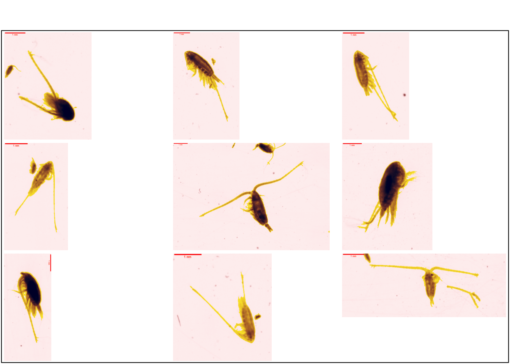
- Clausocalanoidea (Figure 2.10)
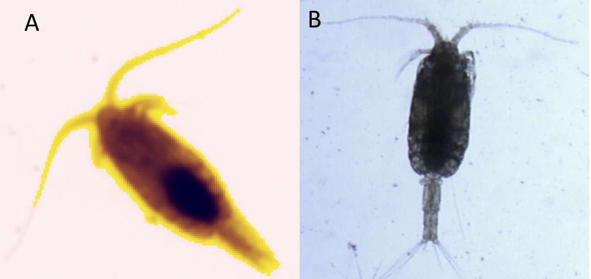
La Figure 2.11 propose des vignettes supplémentaires.
plot_vignettes(vigns, group = "clausocalanoidea")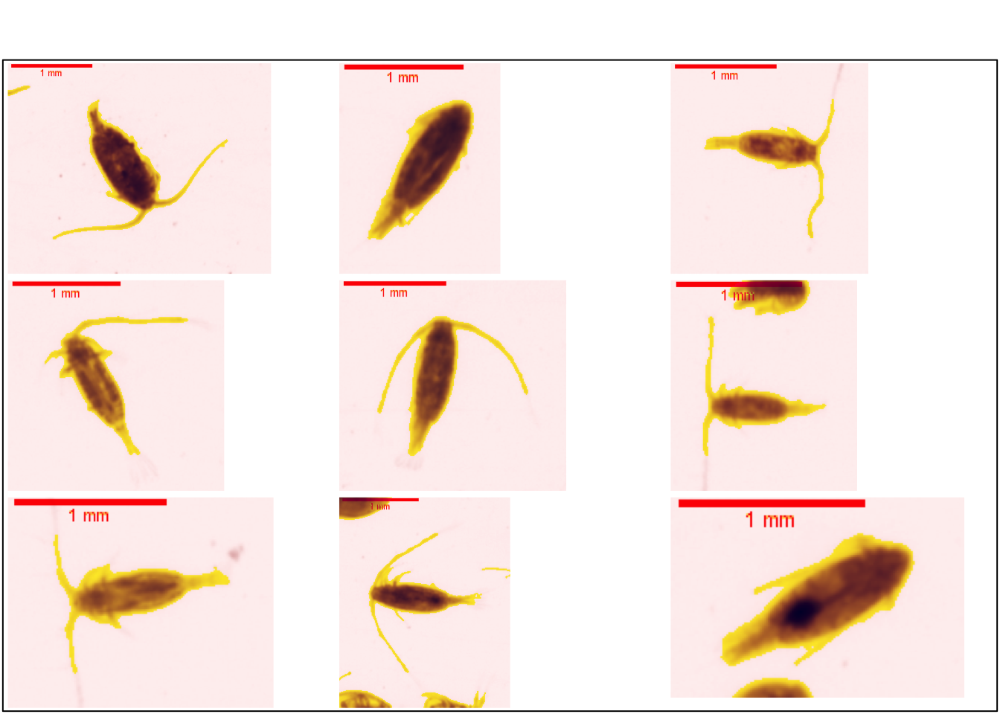
2.2 Podoplea
Les Podoplea sont un super-ordre de copépodes, composés de 7 ordres distincts.
Misophrioida
Harpacticoida
Gelyelloida
Cyclopoida
Mormonilloida
Monstrilloida
Siphonostomatoida
Parmi ces 7 ordres, seuls 3 ont été identifiés dans les vignettes : Harpacticoida, Cyclopoida et Monstrilloida. La difficulté réside dans l’affinage de ces 3 ordres pour aller plus loin dans la taxonomie. Les Monstrilloida et Harpacticoida sont très peu présents et le nombre de vignettes ne permet donc pas d’aller plus loin, ce qui n’est pas le cas pour les cyclopoida.
2.2.1 Monstrilloida
Les Monstrilloida est un ordre assez peu connu de copépode. Il contient une seule famille, celle des Monstrillidae, avec 13 genres. Les larves de ces organismes sont parfois parasites d’annelides et de mollusques (Conway 2012; Bernot et al. 2022).
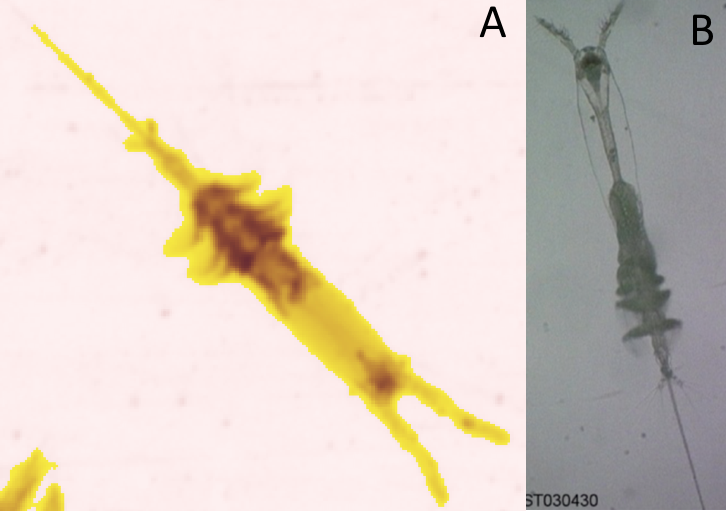
2.2.2 Harpacticoida
Cet ordre de copépode contient 78 familles et approximativement 3000 espèces ( Figure 2.13 ). Certaines de ces familles sont marines, d’autres d’eau douce. Ils sont très importants dans le milieu benthique (Brancelj 2009; Bernot et al. 2022).
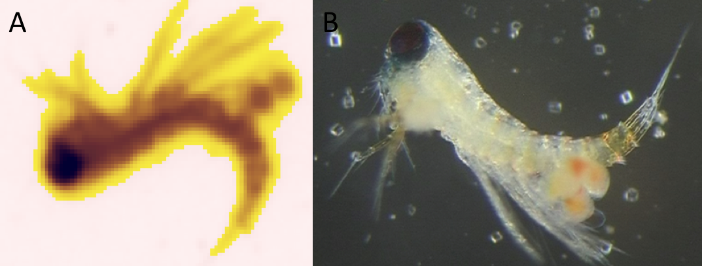
La Figure 2.14 propose des vignettes supplémentaires.
plot_vignettes(vigns, group = "harpacticoida")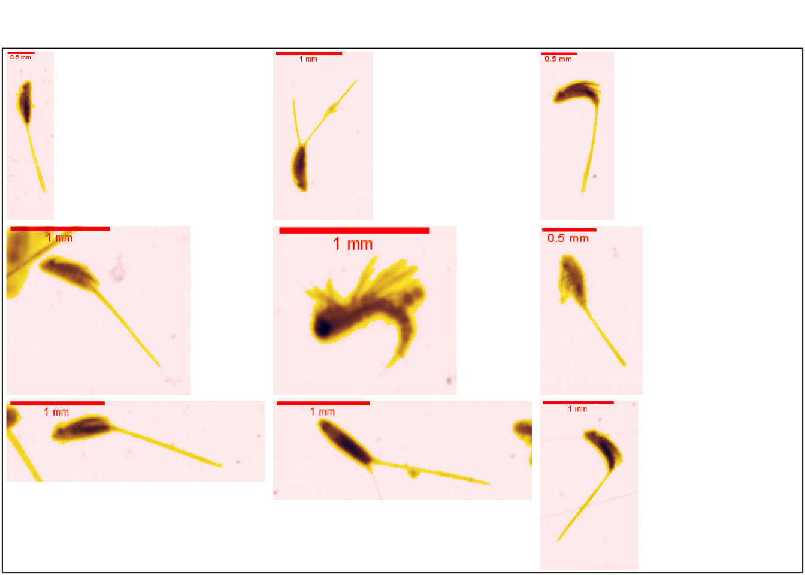
2.2.3 Cyclopoida
La classification des Cyclopoida a récemment été modifiée et remise au gout du jour. Dorénavant les Poecilostomatoida (ancien ordre) sont considérés comme un sous-ordre des Cyclopoida (Khodami et al. 2017). Ce changement de classification est une énorme différence avec les classifications avec les études précédentes dont Quivy, Thomas (2018). Il y a 29 familles de Cyclopoida ne faisant pas partie du sous-ordre des Poecilostomatoida. Ces différentes familles sont rassemblées dans différentes catégories en fonction de la littérature car discriminer chaque famille est impossible sans un expert et il est donc nécessaire d’établir une classification plus large.
2.2.3.1 Poecilostomatoida
Ce sous-ordre de Cyclopoida contient plus de 60 familles, il rassemble des organismes de morphologies très variées ayant pour caractéristique commune le fait que les antennules soient plus courtes que le céphalosome (Quivy, Thomas 2018).
Le nombre de famille étant extrêmement important, il est nécessaire d’établir une classification plus large. Différentes catégories sont donc établies en se basant sur la littérature existante (Humes et Boxshall 1996; Kim 2003; Ho, Ohtsuka, et Nakadachi 2006). Ces catégories contiennent la super-famille des Lichomolgoida et la super-famille des Bomolochoidea. Ensuite 3 super-familles déterminées par des analyses phylogénétiques mais pas encore nommées. Et enfin la dernière catégorie qui rassemble toutes les familles dont la position phylogénétique est soit inconnue soit non-étudiée.
Catégorie 1 - super-famille des Lichomolgoida : Anchimolgidae, Anthessiidae, Kelleriidae, Lichomolgidae, Macrochironidae, Myicolidae, Octopicolodae, Pseudanthessiidae, Rhynchomolgidae, Sabelliphilidae, Sapphirinidae, Spiophanicolidae, Splanchnotrophidae, Synapticolidae, Thamnomolgidae, Urocopiidae
Catégorie 2 - super-famille des Bomolochoidea : Anomoclausiidae, Bomolochidae, Chondracanthidae, Clausiidae, Corycaeidae, Entobiidae, Intramolgidae, Makrostrotidae, Nereicolidae, Paralubbockiidae, Philoblennidae, Polyankyliidae
Catégorie 3 - super-famille unknow 1 : Philichthyidae, Vahiniidae
Catégorie 4 - super-famille unknow 2 : Clausidiidae, Erebonasteridae, Lubbockiidae, Oncaeidae
Catégorie 5 - super-famille unknow 3 : Antheacheridae, Corallovexiidae, Eunicicolidae, Herpyllobiidae, Lamippidae, Leaniricolidae, Mesoglicolidae, Phyllodicolidae, Pionodesmotidae, Saccopsidae, Shiinoidae, Ventriculinidae, Xenocoelomatidae
Catégorie 6 - sans super-famille : Abrsiidae, Bradophilidae, Catiniidae, Echiurophilidae, Ergasilidae, Gadilicolidae, Gastrodelphyidae, Iveidae, Jasmineiricolidae, Mytilicolidae, Praxillinicolidae, Serpulidicolidae, Strepidae
Sur ces 6 catégories, seules 3 se sont retrouvées dans le jeu de données :
- Lichomolgoida (Figure 2.15)
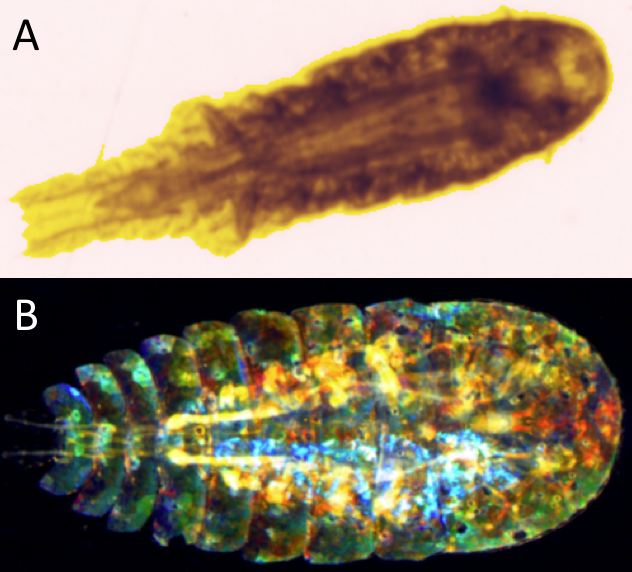
- Bomolochoidea (Figure 2.16)
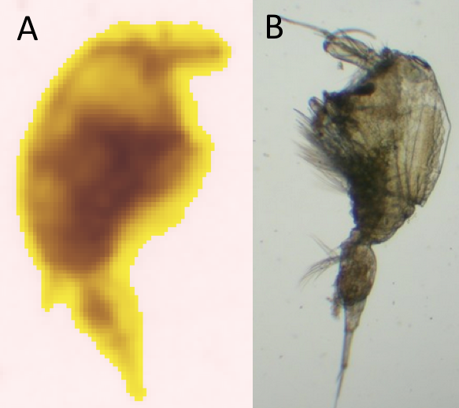
- Organismes de Super-famille-unknow-2 ( Figure 2.17)
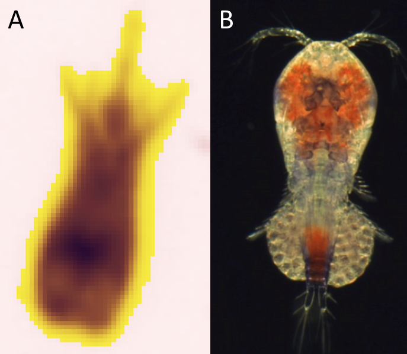
2.2.3.2 Oithonidae
Il est extrêmement difficile de réaliser une classification entre Cyclopoida et les familles que cet ordre contient (hors sous-ordre Poecilostomatoida). Tout d’abord car la morphologie de l’ensemble de ces organismes est très proche mais en plus car la littérature est assez pauvre. Il ressort néanmoins, et ces observations avaient été réalisées également par (Fullgrabe et al. 2020), que la famille des Oithonidae est prépondérante et représente la totalité des Cyclopoida (hors Poecilostomatoida) sur les vignettes ( Figure 2.18 ).
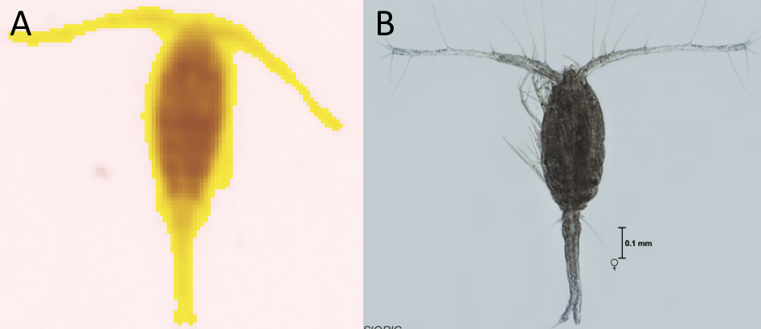
La Figure 2.19 propose des vignettes supplémentaires.
plot_vignettes(vigns, group = "oithonidae")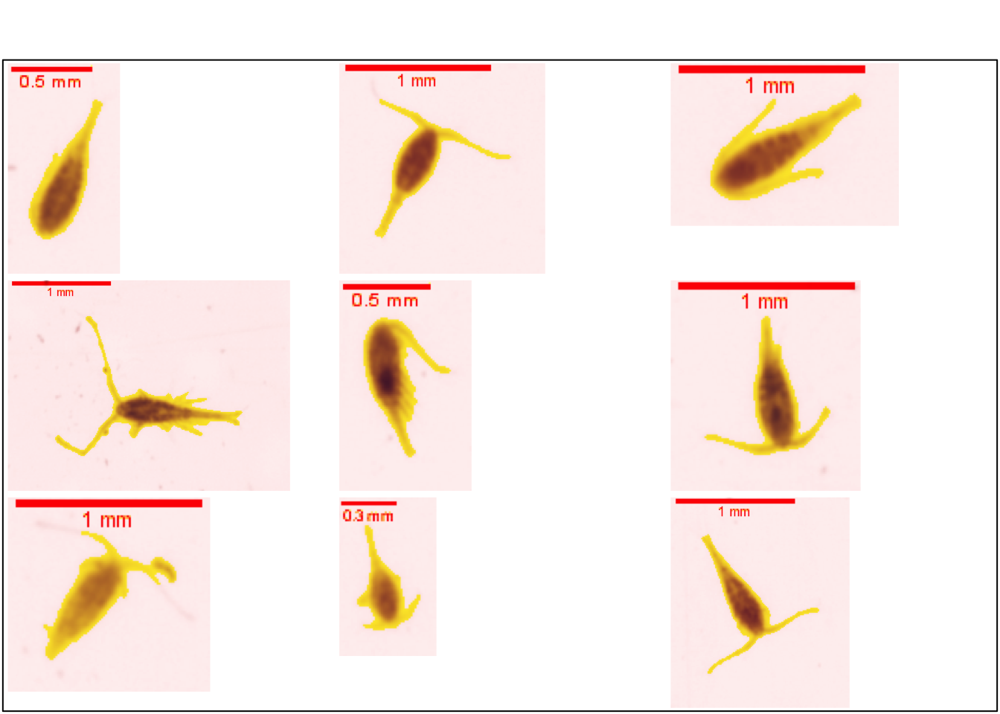